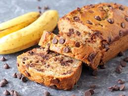
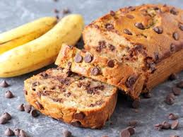
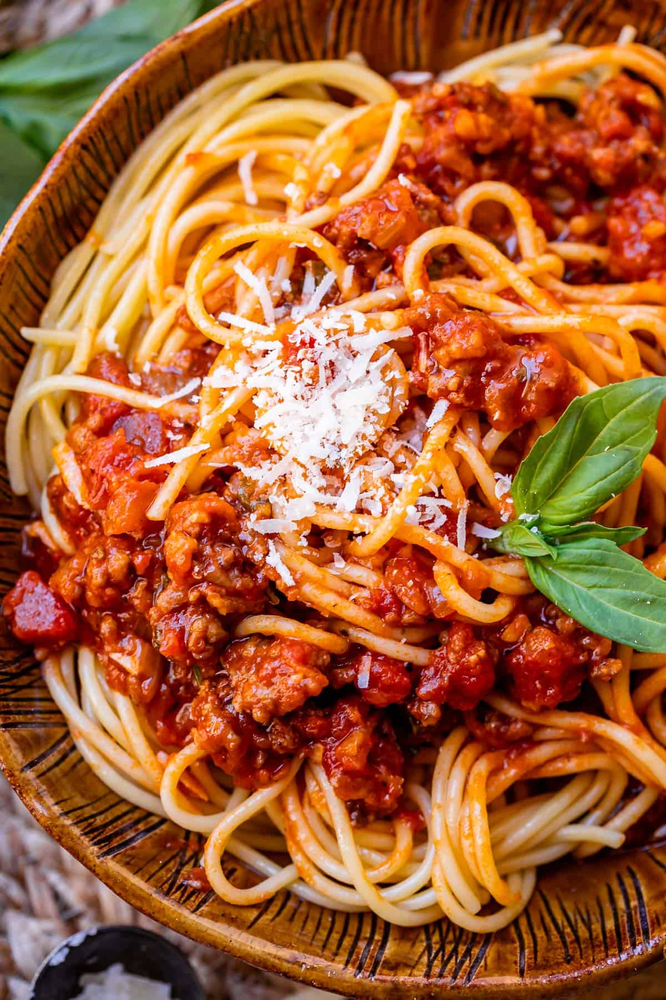

Grilled Cheese
Origin: American
Source: Own Recipe
Category: Lunch

My mom made this many times as a child and it always reminds me of home when I make it now.
Recipe Ingredients
- Sliced bread
- American Cheese
- Butter
Recipe Steps
- 1. Heat a griddle or any pan large enough to comforatbly fit two pieces of bread
- 2. While it's heating, spread a thin layer of butter on one side of both pieces of bread
- 3. Place the buttered side down in the hot pan and your slices of your cheese on the bread
- 4. Once the cheese starts to bubble, flip the pieces of bread together to create your sandwich
- 5. Toast to taste
Additional Food images
Chocolate Chip Banana Bread
A classic dessert fairly healthy dessert everyone will love. A great recipe to use for those overripe bananas.
Recipe Ingredients
- Cooking spray
- 2 cups (240 g) all-purpose flour
- 1 tsp. baking soda
- 1/2 tsp. kosher salt
- 1 large egg plus 1 egg yolk
- 1 cup (200 g) granulated sugar
- 1/2 cup (1 stick) unsalted butter, melted
- 1/4 cup sour cream
- 1 tsp. pure vanilla extract
- 3 ripe bananas, mashed
- 1/2 cup chopped toasted walnuts
- 1/2 cup semisweet chocolate chips
Recipe Steps
- 1. Preheat the oven to 350º. Line a 9"-by-5" loaf pan with parchment and grease with cooking spray.
- 2. In a medium bowl, whisk flour, baking soda, and salt.
- 3. In a large bowl, mix egg, egg yolk, granulated sugar, butter, sour cream, and vanilla. Add bananas and stir until combined. Gradually add dry ingredients to banana mixture until just combined.
- 4.Fold in walnuts and chocolate chips and transfer to prepared pan.
- 5. Bake bread until a tester inserted into the center comes out clean, about 1 hour. Let cool 10 minutes in pan, then invert onto a wire rack and let cool completely.
Additional Food images

 

Spaghetti
Origin: Italian
Source: Own recipe
Category: Dinner

A cheap, easy, and quick meal that's perfect for after a long day at work.
Recipe Ingredients
- Dry spaghetti noodles
- Pasta Sauce
- Cheese
Recipe Steps
- 1. In a pan, add the pasta sauce and just enough water to cover the bottom of the pan. Bring the mixture to a boil.
- 2. Add the spaghetti noodles to the pan and cook according to the packaging instructions.
- 3. In a large bowl, mix egg, egg yolk, granulated sugar, butter, sour cream, and vanilla. Add bananas and stir until combined. Gradually add dry ingredients to banana mixture until just combined.
- 4. Once the noodles are cooked, plate on a pan and add cheese on top.
Additional Food images